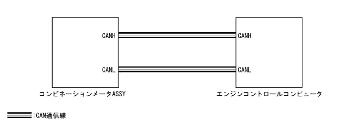

Radar Cruise Control System Indicator Output Circuit |

| Step 1 | Read TaSCAN Data (C/C Main SW (Control CPU), C/C Main SW (Management CPU)) |
Using SST (TaSCAN), operate according to the screen display to display the "ECU Data Monitor" screen.
Operate the cruise control main switch and check the "CRUISE" indicator in the combination meter and the data displayed on TaSCAN.
| Item Name [Symbol] | Item Description/Display Range | Standard Value | Remarks |
|---|---|---|---|
| C/C Main SW (Control CPU) [CMS1] | Displays input signal when main switch is operated Display range: OFF/ON | Main switch ON: ON |
|
| C/C Main SW (Monitoring CPU) [CMS2] | Displays input signal when main switch is operated Display range: OFF/ON | Main switch ON: ON |
|
| Display when main switch is operated (OFF → ON) | Proceed to |
|---|---|
| Both display normally | A |
| Indicator in combination meter does not come on and TaSCAN display changes from OFF → ON | B |
| Indicator in combination meter does not come on and TaSCAN display remains OFF | C |
|
| ||||
|
| ||||
| A | ||
| ||